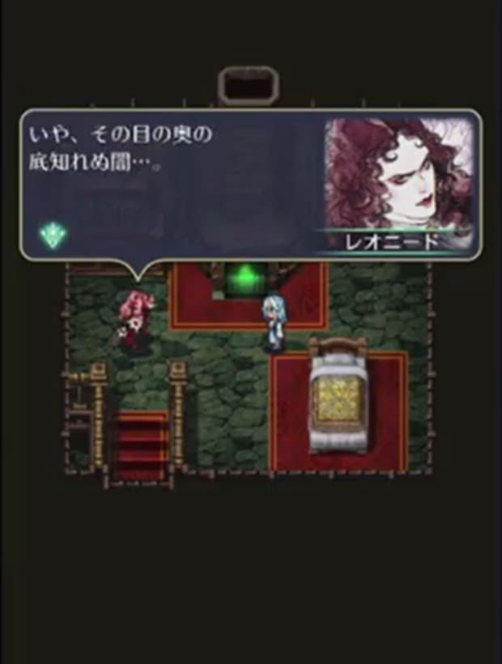
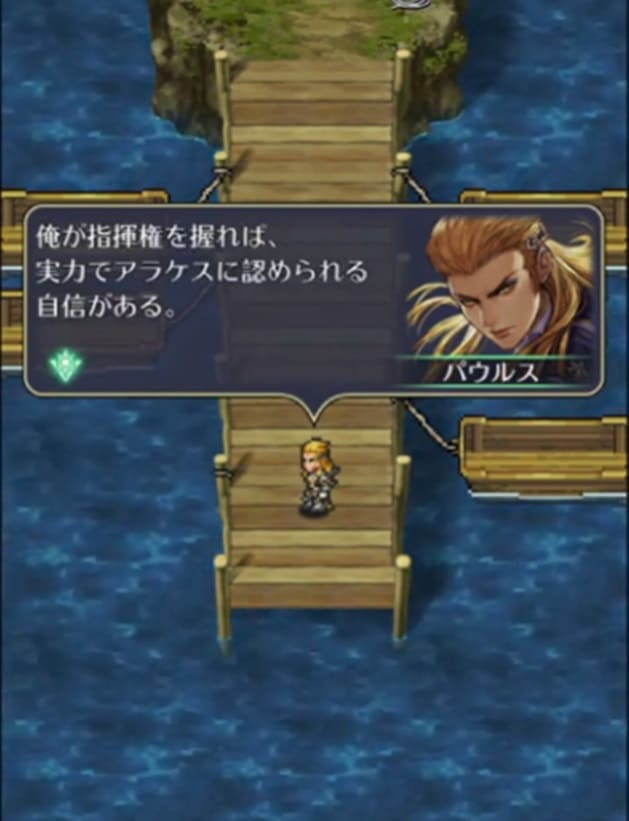
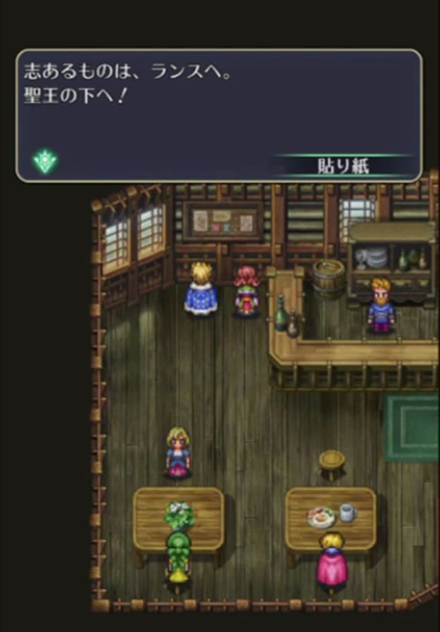
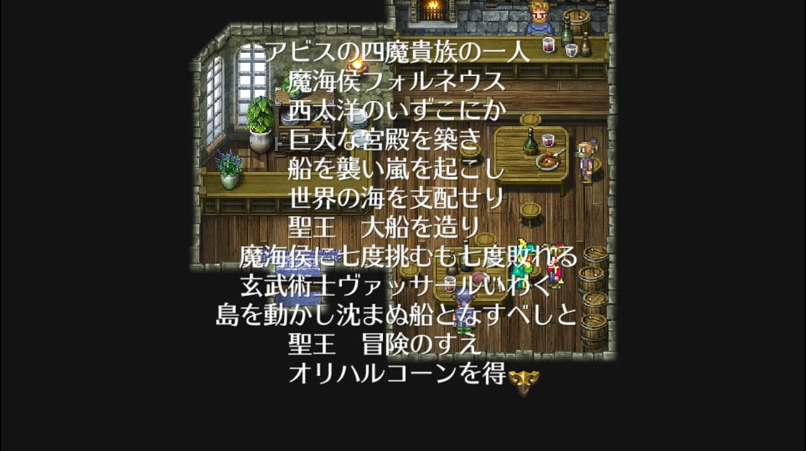
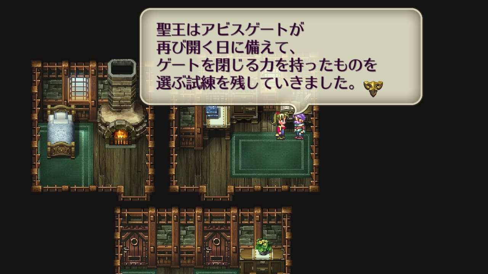
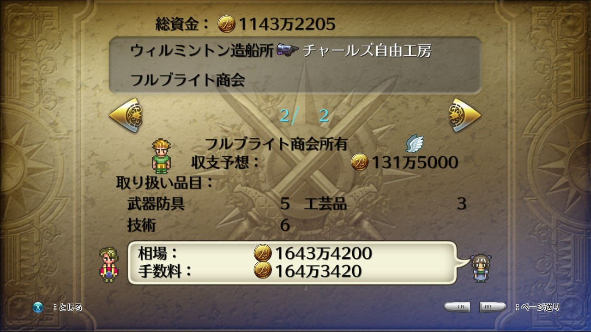

聖王と聖王十二将
聖王
聖王は300年前の死食を生き延びた人物。23歳の時に聖王十二将と共に聖王軍を結成し、四魔貴族をアビスに追い返した。
ロマサガ3のパッケージでは女性で、ゲームのオープニングの聖王は男性のように見える。ロマサガRSでは女性の姿をしている。
ロマサガ3のパッケージ。左が聖王。女性に見える。
ロマサガ3オープニングの聖王。男性に見える。
ロマサガRSの聖王
河津さんの中では女性だったがその設定が充分に共有されておらず、このような齟齬が発生したらしい（以下ポスト参照）。
あと4日です。ロマサガ３の聖王。自分の中では最初から女と決まっていたのですが、高井浩君がオープニングの映像を作ってて、聖王のシルエットが男だつたので、聖王は女、と言ったら「有りがち。サガらしくない」とか言われました。聖王が女というネタばらしする必要も無いので、絵はそのままに。
— 河津秋敏 (@SaGa30kawazu) December 11, 2014
ソープ、フルブライト12世との出会い
聖王はランスの町で生まれ育った。以下画像の「ランスの娘」は、ロマサガRSで登場した幼い頃の聖王。
※画像は抜粋しているので詳細はリンク先の動画参照。
画面下にいるのは、後の聖王十二将となるソープとフルブライト12世。左がソープで右がフルブライト12世。
聖王は12歳の時に姉と共に奴隷商人に攫われるが、奴隷商人ごとモンスターに襲われる。
姉は聖王を護る為モンスターを引き付け、妹の聖王とは離れ離れになってしまう。この後、聖王はレオニードに拾われる。

レオニードは聖王を自分の屋敷に連れて行くが、そこで聖王の目を見た際、300年前の魔王のことを思い出し、追い出してしまう。

聖王は自分が宿命の子と言う特殊な存在であることを自覚する。
ヒルダ、フェルディナントとの出会い
レオニードの元を離れた聖王はユーステルムにて、後の聖王十二将となるヒルダ、フェルディナントと出会う。
ヒルダには、働いて返す前提で食事を分けてもらったり、身を護るすべを教えてもらったりしていた。
関わった人間の殆どが死んでいってしまうような状況で生きていた聖王にとっては、普通の人間として接してもらえた事が新鮮だった模様。
一方、フェルディナントには最初かなり警戒されていた。
その後ユーステルムが魔物に襲われた際、聖王は自身を囮にユーステルムから魔物を引き揚げさせる。

その際、フェルディナントは聖王の身を案じる発言をしている。最初は警戒されていたが、その後、心配してもらえる程に良好な関係を構築できたみたいですね。
パウルスとの出会い
ユーステルムから離れた後、結局奴隷として捕まっていたところ、結果的にパウルスに助けられた（『逃がしてもらった』と言った方が良いかも。ロマサガRSの物語を見る限り、パウルスは聖王を助けたかったわけではなさそうなので）。
パウルスは後の聖王三傑の一人だが、この時はアラケスの部下

※画像は抜粋しているので詳細はリンク先の動画参照。
フルブライト12世の養子へ
練磨の書によれば、『7年の奴隷生活の後、フルブライト12世の養子となった』とある（練磨の書 P225 聖王の伝説より）。養子になった時の聖王は17歳。
パウルスに助けられて船で漂流していたところ、フルブライト12世に拾われ、養子になる。
※画像は抜粋しているので詳細はリンク先の動画参照。
この後聖王は、四魔貴族に立ち向かうためウィルミントンで鍛錬を始めた。ピドナの武具工房が協力を申し出、のちの聖王遺物を作り上げる。
23歳の時、フルブライト12世と共に各地の諸侯を召集。聖王十二将とともに聖王軍を結成し、四魔貴族に立ち向かう。
四魔貴族にはすんなり勝てたわけではなく、苦戦を強いられたようである。
四魔貴族との戦いの様子は、ロマサガRS及びロマサガ3のゲーム中で詩人がその様子を語っています（アラケス除く）。
アウナス討伐とヴァッサールとの出会い
アウナスとの戦いは、ロマサガRSのポルカ編、メイン1部2章第8話-後編で少しですが語られています（詳細はリンク先の動画参照）。
以下、動画の抜粋。
火術要塞を攻略するために玄武術士ヴァッサールの協力を得ようとするが、術の研究の邪魔だという理由で断られてしまう。
しかし実際には、宿命の子が世界にどのような変化をもたらすのか、ヴァッサールはもともと興味を持っていた模様。
聖王たちは、ヴァッサールの協力を得られないまま火術要塞のアウナスを討伐しに行くが、失敗。自分たちの見通しの甘さを痛感し、ヴァッサールの協力を得るために再度彼のものに向かう。
「四魔貴族と戦うには、世界中の人々の力を結集する必要がある」というヴァッサールの助言を得て、その旗印となるべく「聖王」を名乗る。

聖王を名乗り、四魔貴族討伐の志あるものをランスに結集するために動き始める。これを受けてフェルディナントとヒルダが行動を起こす。

パウルスも反応しているが、この時点ではまだアラケス側。
四魔貴族討伐と直接関係はありませんが、ランスで決起する前に生き別れた姉との再会を果たしています。

この後アウナスをどうやって倒したのかは明かされていないが、集まった人で協力して倒したということだと思われる。
フォルネウス
フォルネウスとの戦いの様子はロマサガ3のゲーム中で詩人が以下のように語っています。
フォルネウスには7度破れた後、ヴァッサールの助言を得て、オリハルコーンと玄武術士の力でバンガードを動かし、8度目の戦いで勝利を収める。

ビューネイ
ビューネイとの戦いの様子はロマサガ3のゲーム中で詩人が以下のように語っています。
聖王はビューネイには相手にされなかったが、一時的にドーラ（グゥエインの母親）の協力を得て、討伐に成功。


しかしビューネイを討伐した後、ドーラは人間の村を襲い、宝をかすめ、肉を食らった。結局ドーラは聖王に倒されてしまう。
この時、ドーラの心境はどのようなものだったのでしょうか。ここに関してはグゥエインとの会話で少しだけ語られているので、ドーラとグゥエインの頁をご参照ください。

アラケス
アラケスとの戦いの様子はロマサガRSでもロマサガ3のゲーム中でも語られていませんが、設定上は以下の通り。
パウルスの反逆で魔王殿を開城。そこでアラケスと戦い勝利するも、背後を守っていたオトマンは戦死。魔王殿の奥、アラケスの領域は王家の指輪によって封印される。
こうして聖王は、アウナス、フォルネウス、ビューネイ、アラケス全ての四魔貴族に勝利。アビスに追い返し、ゲートを封印したとされています。
聖王が残したもの
四魔貴族を倒した聖王は、後世のためにいくつかの物を残しました。聖王遺物、聖王廟と最強術です。これは現世にも残されています。
聖王遺物
聖王及び聖王十二将が四魔貴族を倒す際に使用した武器や防具は、聖王遺物として今でも残っています。詳細は別ページにまとめているのでそちら（聖王遺物と魔王遺物）をご参照ください。
聖王廟
四魔貴族を倒したのち、聖王は生まれ故郷のランスに戻り、聖王廟を建設。アビスゲートが開く日に備えて、ゲートを閉じる力を持ったものを選ぶ試練を残しました。

ハリードは聖王廟を『墓』と言っていたり、ランスの町の人は『聖王様をまつる聖王廟』と言っているので、ここに聖王が埋葬されてるらしい。
河津さんも『聖王のお墓』と言っている。
ロマサガ３のランス。聖王廟、つまり聖王のお墓がある町です。名前はフランスのランスから。かつてはフランス国王の戴冠式が行われていた伝統のある古い街ですね。ポドールイは吸血鬼が治める町。雪だるまの町やエビの町があったりと、ロマサガ３の町はバラエティに富んでますね。
— 河津秋敏 (@SaGa30kawazu) November 21, 2014
自分が生きている間に自分の『廟』を作って自分の墓としたって事ですかね・・・？建設当時は聖王廟という名前ではなかった可能性もある・・・のかな？（妄想です）
最強術
最強術も残しました。ゲーム中では四魔貴族（影）を倒すことで使えるようになります。
なぜ四魔貴族を倒すと最強術が使えるようになるのかについてはこちらで少し考察しているのでご参考にどうぞ。
使えるようになった最強術はなぜかアンナが伝授してくれます。

聖王三傑
聖王は、魔王ほど突出した能力は持たなかったが、仲間に恵まれ、その仲間と協力して四魔貴族と戦い、勝利しました。
その12名の仲間を聖王12将と呼び、その中でも代表格の3名を聖王三傑と呼びます。
設定が明らかにされている聖王十二将は以下8名。残り4名は設定はおろか、名前すら明かされていません。
ヴァッサール
※画像はこちらから抜粋
ヴァッサールは聖王三傑の一人で、玄武術士。
ロマサガRSのメインストーリーやロマサガ3ゲーム中の詩人の詩によると、魔海候フォルネウスを倒すため、バンガードの建造を聖王に提言。自身が設計・建造したバンガードを動かして海底宮に潜入し、フォルネウス撃破へと導いた人物。
以下はロマサガRSのメインストーリーの画像
※画像は抜粋しているので詳細はリンク先の動画参照。
以下はロマサガ3ゲーム中の詩人の詩
詩人の詩の中にある西大洋はガーター半島の左側の海。
ガーター半島にあるモウゼスは玄武術の本場で、彼が起こした街だとされている。ゲーム中で玄武術を教えてくれる人が多いのは彼の名声によるものらしい。
また、ロマサガRSのSスタイルのテキストを見ると、ヴァッサールは連携を重視している人物だということがうかがえます。
実際、「四魔貴族と戦うには、世界中の人々の力を結集する必要がある」と聖王に助言しています。
「モウゼス」と「玄武術士」とくれば、ロマサガ3のゲーム内ではウンディーネという優秀な術士がいますよね。
モウゼス（北）の町の人の話によると、ウンディーネは術士同士の連携を重んじているらしい。これはおそらく、（書籍や当時の記録などを通じて）ヴァッサールの影響を受けた結果、連携を重んじるようになったのだと考えています（妄想です）。
ヴァッサールは、聖王の後の世界においても大いに影響を与えている人物だということがわかります。
ロマサガRS 公式書籍やロマサガRSのヴァッサールの詳細にある通り、聖王の傍で参謀として支えた人物でもある。
ロマサガRSのヴァッサールの詳細
パウルス
※画像はこちらから抜粋
ゲーム中では名前すら登場しないが、聖王三傑の一人。元々アラケスの配下だったが、アラケスを裏切って聖王の側につく。
アラケスを裏切り、魔王殿への道をあけたことで聖王軍はアラケスを撃退する事に成功した。
翌年四魔貴族残党掃討で活躍。その功績で聖王三傑に加えられ、メッサーナ王国の国王となった。
メッサーナはスタンレー、ファルスやピドナ、リブロフ辺りの地域。

パウルスは野心的な性格で、聖王を逃がしたのも「宿命を利用して出世するため」だったりする。
これは明確な描写は（おそらく）なく、管理人個人の妄想ですが、聖王の側についたのも世界平和のためとかではなく「その方が自分にとって得だから」とか考えてそうな印象。
実際、結果的にメッサーナ王国の国王となっており、大出世を果たしている。
ロマサガRSのパウルスの詳細
フェルディナント
※画像はこちらから抜粋
フェルディナントは聖王三傑の1人。七星剣の使い手。獅子にも例えられる程の勇猛な戦いぶりで、猛将とも呼ばれる。
ミカエルとモニカとウォードの祖先。
以下画像はゲーム中のユーステルムの町の人との会話。フェルディナントとその妻ヒルダはユーステルム出身。
四魔貴族を追い返した後、メッサーナ王国の国王に推薦されるが辞退。かつて魔王に滅ぼされたロアーヌの廃墟に向けて旅立った。
ヨルド海を渡り、ミュルスの森を切り開き、ようやくロアーヌの廃墟へたどり着いた。勇者の後には人が続き、道ができ、やがて大きな都になった。こうしてロアーヌの都は再興し、ミュルスは港に発展。フェルディナントは初代ロアーヌ候となる。
詩人の詩の中にあるヨルド海はメッサーナとロアーヌ地方の間にある海
詩人の詩の最後、「予言どおりに国を立てた」とありますが、おそらくフェルディナントは予言のことはあまり気にしていなかったと思われます。これはロマサガRSのフェルディナントの以下のフレーバーテキストから推察できます。
予言されたから国を立てるように動いたのではなく、『自分の思う通りに動いたら結果的に国を立てることになった』という雰囲気ですよね。

フェルディナントがあつらえた玉座は、現在においても栄光あるものとして扱われている。
ロマサガRSのフェルディナントの詳細。

聖王十二将
聖王三傑には入らなかったものの、聖王十二将と呼ばれる人物たち。
ヒルダ
※画像はこちらから抜粋
ヒルダはフェルディナントと同じくユーステルム出身で、フェルディナントの妻。
マスカレイドの使い手で、ミカエルとモニカとウォードの祖先に当たる人物。
マスカレイドは後にロアーヌの家宝になり、フランツ侯爵（ミカエルの父親）がモニカの護衛のために、侍女のカタリナに預けている。
ロマサガRSのヒルダの詳細
フルブライト12世(フルブライト将軍)
※画像はこちらから抜粋
フルブライト12世は、ロマサガ3のゲーム中で仲間にできるキャラクターの1人であるフルブライト23世の祖先にあたる人物。フルブライト将軍とも呼ばれる。
奴隷だった聖王を養子とし、共に四魔貴族と戦った。この功績をたたえられ、フルブライト家は聖王ゆかりの名家として大成。
彼の家はフルブライト商会に発展するが、現在はあくどい商売を続けるヤーマスのドフォーレ商会に押されている。
ロマサガRSのフルブライト12世の詳細
ソープ
※画像はこちらから抜粋
聖王の護衛兵を務める。元々臆病者だったが、聖王から渡された兜をかぶると、不思議と恐れがなくなった。
戦いを重ねるごとに本当の勇者になり、アラケスとの決戦の前に、この大事な兜を息子に預けて出陣した。
これがのちの聖王の兜で、聖王廟に祭られている。
ロマサガRSのソープの紹介文によると、フルブライト家の使用人。聖王とは旅の始まりから常に側にいた。
ロマサガRSのソープの詳細

オトマン
※画像はこちらから抜粋
死食のあとの混乱を逃れ、森の中で一人剣の修行に明け暮れていた人物。聖王と出会い諭されると、四魔貴族を打倒すべく聖王軍に加わった。
ビューネイとの戦いの最中に左腕を失い、聖王から銀の手を授かる。
失われた左腕にはめると、銀の手はひとりでに剣を握り、自在に振り下ろした。まさに鬼に金棒、オトマンは二刀流で戦えるようになる。
銀の手はオトマンが寝ていても休むことはなく、夜襲から何度も彼を救った。
アラケスとの戦いの最中オトマンは戦死するが、銀の手は戦い続け、聖王の背後を護り切る。
銀の手が自動で動くautoとmanを組み合わせた造語になっている。
ロマサガRSのオトマンの詳細
チャールズ
聖王十二将の一人であり、フルブライト12世の実子。
フルブライト12世の養子となった聖王と共に育ったが、戦死したとされている。
トレードゲームに、ウィルミントンのチャールズ自由工房という物件が存在する。恐らくゆかりのものだろう。

参考
- Neetlife Game 聖王廟
- Neetlife Game 聖王
- Neetlife Game 聖王十二将
- Neetlife Game 宿命の子
- サガ用語辞典 Wiki* 【聖王十二将】
- サガ用語辞典 Wiki* 【フルブライト12世】
- サガ用語辞典 Wiki* 【チャールズ(RS3)】
- サガ用語辞典 Wiki 【ヴァッサール】
- サガ用語辞典 Wiki 【ヒルダ】
- 小林知美Blog 聖王十二将
- ロマサガRS（リユニバース）攻略Wiki フェルディナント
- ロマサガRS（リユニバース）攻略Wiki ヴァッサール
- ロマサガRS（リユニバース）攻略Wiki パウルス
- ロマサガRS（リユニバース）攻略Wiki ヒルダ
- ロマサガRS（リユニバース）攻略Wiki オトマン
- ロマサガRS（リユニバース）攻略Wiki ソープ
- ロマサガRS（リユニバース）攻略Wiki フルブライト12世
- wikipedia ロマンシング サ・ガ3